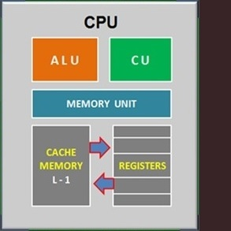

Central Processing Unit (CPU) -> Start learning
The central processing unit (CPU) is the computer component that's responsible for interpreting and executing most of the commands from the computer's other hardware and software. The form, design, and implementation of CPUs have changed over time, but their fundamental operation remains almost unchanged. It consists of six main components:
CPU Clock Speed
The clock speed of a processor is the number of instructions it can process in any given second, measured in gigahertz (GHz). For example, a CPU has a clock speed of 1 Hz if it can process one piece of instruction every second. Extrapolating this to a more real-world example: a CPU with a clock speed of 3.0 GHz can process 3 billion instructions each second.
Some devices use a single-core processor while others may have a dual-core (or quad-core, etc.) processor. Running two processor units working side-by-side means that the CPU can simultaneously manage twice the instructions every second, drastically improving performance.
Random Access Memory (RAM) -> Start learning
Random-access memory (RAM) is a form of computer memory that can be read and changed in any order, typically used to store working data and machine code. A random-access memory device allows data items to be read or written in almost the same amount of time irrespective of the physical location of data inside the memory, in contrast with other direct-access data storage media.
What is RAM Speed and Latency?
While the two are closely related, they are not connected in the way you might think. At a basic level, latency refers to the time delay between when a command is entered and when the data is available. Understanding speed and latency of RAM will help you better choose the right RAM to install in your system based on your needs.
RAM contains multiplexing and circuitry, to connect the data lines to the addressed storage for reading or writing the entry. Usually more than one bit of storage is accessed by the same address, and RAM devices often have multiple data lines and are said to be "8-bit" or "16-bit", etc. devices.
Other uses for RAM
Virtual Memory
Using virtual memory, a computer can combine permanent storage with RAM to create a bigger pool of storage. This is useful when the RAM does not have enough space to store anymore information. The extra data is then placed in the permanent storage instead of the RAM. The method has a limitation which is that permanent storage is often slower than RAM, which can slow down a computer.
RAM disk
A computer can use a part of the RAM to store permanent files. This is called a RAM disk. When the computer is turned on, files are copied to the RAM disk. This allows the files to open faster because RAM is faster than permanent storage. When the computer is turned off, the information on the RAM disk is lost, which is why the files need to exist on permanent storage as well.
Monitor -> Start learning
A computer monitor is an output device that displays information in pictorial or text form. A monitor usually comprises a visual display, some circuitry, a casing, and a power supply. Originally, computer monitors were used for data processing while television sets were used for entertainment. From the 1980s onwards, computers (and their monitors) have been used for both data processing and entertainment, while televisions have implemented some computer functionality.
Types of monitors:
A fixed rack mount monitor is mounted directly to the rack with the LCD visible at all times. The height of the unit is measured in rack units (RU) and 8U or 9U are most common to fit 17-inch or 19-inch LCDs. The front sides of the unit are provided with flanges to mount to the rack, providing appropriately spaced holes or slots for the rack mounting screws. A 19-inch diagonal LCD is the largest size that will fit within the rails of a 19-inch rack. Larger LCDs may be accommodated but are 'mount-on-rack' and extend forward of the rack.
A stowable rack mount monitor is 1U, 2U or 3U high and is mounted on rack slides allowing the display to be folded down and the unit slid into the rack for storage. The display is visible only when the display is pulled out of the rack and deployed. These units may include only a display or may be equipped with a keyboard creating a KVM (Keyboard Video Monitor). Most common are systems with a single LCD but there are systems providing two or three displays in a single rack mount system.
Mouse -> Start learning
A computer mouse is a hand-held pointing device that detects two-dimensional motion relative to a surface. This motion is typically translated into the motion of a pointer on a display, which allows a smooth control of the graphical user interface of a computer.
Different ways of operating the mouse cause specific things to happen in the GUI:
Operating an opto-mechanical mouse:
Most modern mice use optical sensors that have no moving parts. Though originally all mice were connected to a computer by a cable, many modern mice are cordless, relying on short-range radio communication with the connected system.
Keyboard -> Start learning
A computer keyboard is a peripheral input device modeled after the typewriter keyboard which uses an arrangement of buttons or keys to act as mechanical levers or electronic switches. Replacing early punched cards and paper tape technology, interaction via teleprinter-style keyboards have been the main input method for computers since the 1970s, supplemented by the computer mouse since the 1980s.
Computer keyboards include control circuitry to convert key presses into key codes (usually scancodes) that the computer's electronics can understand. The key switches are connected via the printed circuit board in an electrical X-Y matrix where a voltage is provided sequentially to the Y lines and, when a key is depressed, detected sequentially by scanning the X lines. The keyboard switch matrix is wired to its inputs, it converts the keystrokes to key codes, and, for a detached keyboard, sends the codes down a serial cable (the keyboard cord) to the main processor on the computer motherboard. This serial keyboard cable communication is only bi-directional to the extent that the computer's electronics controls the illumination of the caps lock, num lock and scroll lock lights.
Computer Data Storage -> Start learning

Various forms of storage, divided according to their distance from the central processing unit. The fundamental components of a general-purpose computer are arithmetic and logic unit, control circuitry, storage space, and input/output devices. Technology and capacity as in common home computers around 2005.
Graphics Card -> Start learning
A graphics card (also called a video card, display card, graphics adapter,vga card/vga, video adapter, or display adapter) is an expansion card which generates a feed of output images to a display device (such as a computer monitor). Frequently, these are advertised as discrete or dedicated graphics cards, emphasizing the distinction between these and integrated graphics. At the core of both is the graphics processing unit (GPU), which is the main component that performs computations, but should not be confused with the graphics card as a whole, although "GPU" is often used as a metonymic shorthand to refer to graphics cards. Most graphics cards are not limited to simple display output. Their integrated graphics processor can perform additional processing, removing this task from the central processor of the computer.
Sound Card -> Start learning
A sound card (also known as an audio card) is an internal expansion card that provides input and output of audio signals to and from a computer under control of computer programs. The term sound card is also applied to external audio interfaces used for professional audio applications.
Uses of sound cards
Typical uses of sound cards or sound card functionality include providing the audio component for multimedia applications such as music composition, editing video or audio, presentation, education and entertainment (games) and video projection. Sound cards are also used for computer-based communication such as voice over IP and teleconferencing.
Sound cards use a digital-to-analog converter (DAC), which converts recorded or generated digital signal data into an analog format. The output signal is connected to an amplifier, headphones, or external device using standard interconnects, such as a TRS phone connector.
Speakers -> Start learning
Computer speakers, or multimedia speakers, are speakers sold for use with computers, although usually capable of other audio uses, e.g. for an MP3 player. Most such speakers have an internal amplifier and consequently require a power source, which may be by a mains power supply often via an AC adapter, batteries, or a USB port.
Computer speakers range widely in quality and in price. Computer speakers sometimes packaged with computer systems are small, plastic, and have mediocre sound quality. Some computer speakers have equalization features such as bass and treble controls. Bluetooth speakers can be connected with a computer by using an Aux jack and compatible adaptor.Some computer displays have rather basic speakers built-in. Laptop computers have built-in integrated speakers, usually small and of restricted sound quality to conserve space.
Motherboard -> Start learning

A motherboard (also called mainboard, main circuit board, or mobo) is the main printed circuit board (PCB) in general-purpose computers and other expandable systems. It holds and allows communication between many of the crucial electronic components of a system, such as the central processing unit (CPU) and memory, and provides connectors for other peripherals. Unlike a backplane, a motherboard usually contains significant sub-systems, such as the central processor, the chipset's input/output and memory controllers, interface connectors, and other components integrated. Motherboard means specifically a PCB with expansion capabilities. As the name suggests, this board is often referred to as the "mother" of all components attached to it, which often include peripherals, interface cards, and daughterboards: sound cards, video cards, network cards and a variety of other custom components.